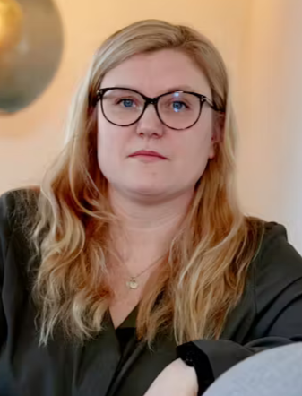

Kilder og eksperter
Kilder
- Kristeligt Dagblad - 10 ting at vide om aktiv og passiv dødshjælp.
- Det Etiske Råd - Det Etiske Råds mening om aktiv dødshjælp (eutanasi).
- Aktive Læger - Svend Lings' modargumenter til Det Etiske Råd.
- YouTube - Video om, hvordan medicin til frivillig assisteret død laves.
- Death Penalty Information Center - Kommende henrettelser i USA.
- Retten til at dø - Information om Svend Lings, tidligere læge der hjælper med aktiv dødshjælp.
- Ugeskrift for Læger - Viden om forskellige typer aktiv dødshjælp og hvor det er tilladt i verden.
- DR Nyheder - Oversigt over forskellige former for dødshjælp og hvor de er tilladt i Europa.
- Svend Brinkmann - Diskussion om etiske overvejelser vedrørende dødshjælp.
- TV2 Nyheder - Ny undersøgelsesmodel viser opbakning til aktiv dødshjælp.
- Wikipedia - Hvordan tidligere hollandske statsminister Dries van Agt døde sammen med sin kone gennem aktiv eutanasi.
- BBC News - Historie om dødshjælp og relaterede overvejelser.
- Wikipedia - Lovgivning om dødshjælp rundt om i verden.
- Reddit - Diskussion om lovligheden af dødshjælp i Europa pr. januar.
- The Guardian - Konflikt mellem præsidenten og parlamentet i Portugal om legalisering af aktiv dødshjælp til uhelbredeligt syge.
- BBC News - Det portugisiske parlament legaliserer dødshjælp efter lang debat.
- DR Nyheder - Foto af Svend Lings, tidligere læge involveret i assisteret selvmord.
- Ude og Hjemme - Foto og historie om Linda Lund.
Vores eksperter

Lind Lund
Formand for foreningen 'Ret til at dø'

Svend Lings
Læge - Der har veddtaget aktivdødshjælp i Danmark

Majken Nymark Madsen
Afdelingsleder og overlæge på palliative afdeling, OUH